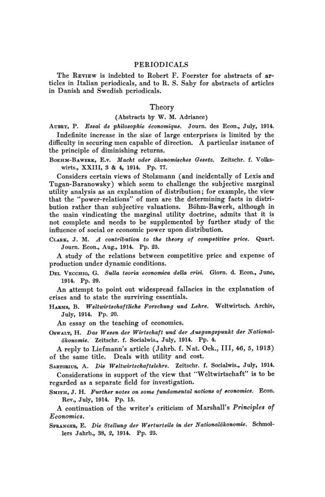

Salários que perdem para a comida e a nova Federal Trade Commission
Leitura: 14 min
Rubinow refaz o índice de salários reais e encontra perda desde 1907; Stevens examina a lei da Federal Trade Commission; Fisher responde às objeções ao dólar compensado; Brown e Fetter discutem concorrência e juros.


Entre 1907 e 1912, segundo os cálculos de I. M. Rubinow, o salário semanal do trabalhador da indústria americana passou a comprar 12,7% menos comida. O número não vinha de nenhuma publicação oficial. O Bureau of Labor Statistics deixara de divulgar o seu índice de salários reais em 1908, e Rubinow o reconstruiu com os boletins que o próprio órgão voltara a publicar, um a um.
O número de dezembro de 1914 da American Economic Review, último do vol. 4, traz cinco artigos. Harry Gunnison Brown, de Yale, classifica as formas de concorrência entre empresas de transporte. Rubinow trata dos salários reais. Irving Fisher, também de Yale, responde às objeções ao seu dólar compensado; a bibliografia inclui as críticas publicadas na própria Review em 1913. W. H. S. Stevens, da Columbia University, examina a lei que criou a Federal Trade Commission, assinada pelo presidente Wilson em 26 de setembro. Frank A. Fetter, de Princeton, fecha com uma tréplica a Brown sobre a teoria dos juros. A guerra europeia aparece de passagem: Fisher menciona o conflito em curso, e Stevens registra que ele levou ao adiamento de um projeto sobre títulos ferroviários. Seguem resenhas, documentos, resumos de periódicos e notas, com o programa da reunião anual de Princeton.
Toda concorrência entre transportadoras é igual?
Harry Gunnison Brown (Yale University) · “The Competition of Transportation Companies” · pp. 771–792
Brown distingue quatro tipos de concorrência entre empresas de transporte: de linhas diferentes na mesma rota, típica do mar, onde a via é de todos; de rotas, quando duas ou mais linhas ligam os mesmos pontos, como Chicago e Nova York; de direções; e de localizações. Acrescenta uma quinta, num sentido mais amplo: a concorrência com a autossuficiência local, que tarifas altas por milha estimulam.
A concorrência de rotas costuma levar cargas por caminhos mais longos, o que gasta mais trabalho para o mesmo resultado, como faz uma tarifa protecionista. Brown, porém, aponta três casos em que a linha indireta é a mais econômica: quando o tráfego excede a capacidade da linha direta e o capital da indireta já está enterrado; quando a linha indireta passa por cidades cujo tráfego local paga as despesas gerais; e quando, havendo linhas demais, convém abandonar a direta, e não a indireta. Por isso se opõe a proibir a concorrência das rotas indiretas e propõe aplicar a regra do percurso longo e curto com uma margem percentual de desvio, maior para as linhas mais indiretas, até um limite fixado pela Interstate Commerce Commission.
É a concorrência de direções: o mesmo centro produtor escolhe entre mercados diferentes conforme os fretes. O caso real é o do sal de Michigan e do Kansas, que se encontram em St. Louis; a Wabash, que liga Detroit a St. Louis, teve de manter fretes compatíveis com os dos concorrentes. Uma consequência prática é que regular a tarifa de uma ferrovia altera, indiretamente, a de outras. A concorrência de localizações, como a disputa entre ferrovias pela produção de madeira que abastecia as cidades do rio Missouri, até o acordo de 1884, é a mais fraca. O fecho retoma a fórmula clássica do que o tráfego suporta: o monopolista cobra o que o tráfego aguenta sem ser destruído; a empresa com concorrentes, o que ele aguenta sem ser desviado.
“Pode ser melhor ter concorrência, mesmo com o desperdício econômico inseparável dela, do que não ter concorrência alguma.” (“It may be better to have competition even with the economic waste inseparable from it”)
O salário do operário acompanhou o custo de vida?
I. M. Rubinow · “The Recent Trend of Real Wages” · pp. 793–817
Rubinow começa pelas fontes. O 18º relatório anual do órgão federal de estatísticas do trabalho, de 1903, trouxe preços de varejo de 30 alimentos desde 1890; o 19º, salários e horas em 67 indústrias. Em 1905, o Bulletin 57 dividiu um índice pelo outro e criou o índice do poder de compra dos salários medido pelos preços dos alimentos, atualizado até 1907. A série ficou popular como prova da prosperidade do assalariado. Rubinow observa que ela mostra, ao contrário, oscilações em torno do mesmo nível.
Depois de 1907 as duas séries foram suspensas. A de preços voltou no fim de 1912, mais estreita: 15 alimentos em vez de 30, 39 cidades em vez de 68 localidades. Os itens retirados, como café, chá e arroz, subiam menos que os mantidos, e o índice novo marca, para 1907, 5,3 pontos acima do antigo. A de salários voltou em agosto de 1913, em estudos por indústria e numa série de escalas sindicais com nova base, sem índice geral nem índice de salário real.
Rubinow juntou quinze séries, reconverteu as escalas sindicais à base antiga de 1890–1899 e testou o resultado: entre 1890 e 1907, a média simples das quinze séries fica, em média, a menos de meio ponto do índice oficial. Com o índice de horas, calculou o salário semanal e o comparou com os preços dos alimentos até 1912.
Mesmo descontando 5% ou 6% pelo possível exagero do novo índice de preços, Rubinow calcula uma perda de 7% a 8% em cinco anos. Para explicar por que o padrão de vida parecia melhor, aponta famílias menores, mais mulheres no trabalho remunerado e mais renda complementar no orçamento doméstico, sem aumento da remuneração do trabalho. Conclui que uma parcela menor do valor produzido chegava ao assalariado.
As objeções ao dólar compensado têm resposta?
Irving Fisher (Yale University) · “Objections to a Compensated Dollar Answered” · pp. 818–839
Fisher lembra a trajetória do plano, esboçado em The Purchasing Power of Money (1911), apresentado em Boston em 1912 e detalhado no Quarterly Journal of Economics em fevereiro de 1913, e responde às catorze objeções mais técnicas que recebeu. A bibliografia final foi selecionada de 344 referências, 305 delas de jornais. Fisher reconhece que Simon Newcomb, em 1879, e Aneurin Williams, em 1892, anteciparam o plano quase por inteiro, e diz que lhe resta como original apenas a cláusula contra a especulação com ouro.
O plano, em resumo: as moedas de ouro seriam trocadas por certificados, e a quantidade de ouro em que cada dólar é resgatado, hoje 25,8 grãos, mudaria todo mês conforme um número-índice de preços. O governo compraria ouro 1% mais barato do que o vende, e nenhum ajuste mensal poderia passar de 1%, para não dar lucro aos especuladores.
As respostas seguem um padrão. O plano não depende da teoria quantitativa da moeda. Ao temor de Taussig de uma explosão súbita de preços, Fisher responde que a correção age sempre na direção da paridade, e que o ajuste é proporcional ao excesso acumulado do índice sobre a paridade, não à variação desde o último ajuste; num exemplo com alta subjacente de 1% ao mês, o nível de preços nunca chega a 2% acima do par. Guerras não obrigariam a abandonar sistemas nacionais paralelos. O padrão múltiplo não é o ideal absoluto, admite, mas é mais confiável que o ouro.
“O mecanismo compensador é, assim, semelhante ao regulador de uma máquina a vapor.” (“The compensating device is thus similar to the governor on a steam engine.”)
À objeção de que o plano nunca foi testado, Fisher opõe o padrão de câmbio-ouro criado para a Índia entre 1893 e 1900 e adotado depois nas Filipinas, no Panamá, nos Straits Settlements, no México e no Sião. Cita os economistas que aprovaram o plano, entre eles Hadley, J. B. Clark, Marshall, Edgeworth, Keynes e Pigou, e registra que dois em cada sete editoriais de jornal foram favoráveis e três, contrários.
O que a lei da Federal Trade Commission muda?
W. H. S. Stevens (Columbia University) · “The Trade Commission Act” · pp. 840–855
Stevens reconstrói a tramitação desde a mensagem de Wilson ao Congresso, em 20 de janeiro de 1914, e os cinco projetos preliminares que a seguiram. O da comissão passou na Câmara em 5 de junho, em votação simbólica; no Senado, ganhou o dispositivo sobre concorrência desleal e foi aprovado em 5 de agosto; a versão da conferência entre as duas Casas foi assinada em 26 de setembro. A comissão tem cinco membros, no máximo três do mesmo partido, com mandatos de sete anos (os primeiros, escalonados de três a sete), e absorve o Bureau of Corporations, que deixa de existir.
O autor examina os poderes um a um. Os de assessoria, recomendar ao Attorney General a reorganização de empresas e preparar, a pedido dos tribunais, a minuta de sentenças em ações antitruste, dependem da vontade de quem consulta; Stevens pergunta por que não foram tornados obrigatórios. Boa parte dos poderes de investigação repete os do Bureau of Corporations ou o que o Departamento de Justiça já fazia; é nova a investigação das condições do comércio exterior. A exigência de relatórios e a classificação de empresas permitiriam, com contabilidade uniforme, comparar os custos dos trustes com os dos concorrentes independentes.
O poder central é o de impedir métodos desleais de concorrência: a comissão abre o processo, ouve a parte e ordena a cessação; a execução cabe aos Circuit Courts of Appeals, que tomam como definitivas as conclusões de fato apoiadas em prova. Stevens vê nisso um passo importante, porque cinco especialistas decidiriam com fundamentos econômicos, e não só jurídicos. A dúvida que fica é a da punição, pois as multas aplicadas sob o Sherman Act tinham sido pequenas.
A produtividade física explica a taxa de juros?
Frank A. Fetter (Princeton University) · “Capitalization versus Productivity: Rejoinder” · pp. 856–859
A tréplica encerra uma troca iniciada pelo artigo de Fetter Interest Theories, Old and New, publicado na Review em março de 1914, ao qual Brown respondeu em junho reformulando a teoria da produtividade dos juros. Fetter reconhece um mérito na resposta: Brown abandona a ideia de que a taxa de lucro do empresário explica os juros e aceita que o teórico da produtividade precisa mostrar uma taxa de produtividade física à qual os juros se ajustem.
Mas Brown, diz Fetter, reduz a teoria a um mínimo. Admite que haveria juros num mundo de mera escassez, sem produção, e que a preferência temporal, a preferência pelo bem presente ao futuro, existe sempre; reserva à produtividade um papel só quando dois métodos de produção, um direto e outro indireto, convivem na mesma economia. E trata de quantidades de bens, quando uma teoria dos juros precisa explicar uma razão entre valores: o valor da renda e o valor do bem que a gera.
Fetter vê no argumento a velha falácia do custo de produção, que, segundo ele, Böhm-Bawerk denunciou e depois repetiu na própria teoria. A crítica final é de dinâmica. A convivência entre os dois métodos só dura enquanto a preferência temporal coincidir com os 10%. Se for maior, o método novo não compensa; se for menor, o antigo é abandonado. Quando todos os frutos vierem do método indireto, não haverá taxa de produtividade física a regular nada, e só a teoria da capitalização explicará os juros. Fetter admite que, numa economia em desajuste, os juros podem coincidir por algum tempo com essa taxa aparente, mas apenas como reflexo da preferência temporal.
“A preferência temporal domina a escolha entre os métodos técnicos.” (“Time-preference dominates the choice among technical methods.”)
O que mais há na edição?
As resenhas, organizadas por área, incluem The Instinct of Workmanship, de Thorstein Veblen, por Ulysses G. Weatherly; a reedição de Money Answers All Things, de Jacob Vanderlint, organizada por Jacob H. Hollander e resenhada por James Bonar; Der Bourgeois, de Werner Sombart, por Dana C. Munro; Good and Bad Trade, de R. G. Hawtrey, por Minnie Throop England; Verso la Crisi?, de Mario Alberti, por Wesley C. Mitchell; e Unemployment, de A. C. Pigou, por W. M. Leiserson. Os documentos trazem estudos sobre crédito rural em Ohio, a oitava conferência nacional de tributação, a arrecadação e as normas do imposto de renda, relatórios de habitação e o apoio federal ao ensino profissional. As notas anunciam a 27ª reunião anual, em Princeton, de 28 a 31 de dezembro, com sessões sobre especulação em bolsa e sua regulação, distribuição comercial e o trabalho estatístico do governo federal, e registram as mortes de Eugen von Böhm-Bawerk, em 27 de agosto, e de Wilhelm Lexis, em 24 de agosto.
Na minha leitura
Na minha leitura, os cinco artigos tratam da mesma pergunta por ângulos diferentes: o que acontece com uma regra quando as pessoas podem reagir a ela. Brown mostra que a tarifa de uma ferrovia depende das alternativas do embarcador, inclusive a de produzir outra coisa; Fisher desenha uma regra monetária que corrige o próprio erro mês a mês; Stevens pergunta se uma comissão sem poder de punir muda o comportamento de quem lucra com a concorrência desleal; Fetter lembra que a escolha da técnica depende da preferência temporal, e não o contrário.
O artigo de Rubinow trata de outra coisa, igualmente permanente: a dependência de qualquer conclusão sobre bem-estar em relação ao modo de construir o índice. Bastaram uma troca de cesta, uma troca de base e a suspensão de uma série para que a pergunta mais simples, se o salário compra mais ou menos do que antes, deixasse de ter resposta oficial. A reconstrução que ele faz é, antes de tudo, um exercício de compatibilização de séries.
Glossário
- Concorrência de direções
- disputa entre linhas que saem do mesmo centro produtor rumo a mercados diferentes.
- Regra do percurso longo e curto (long and short haul)
- dispositivo da lei de comércio interestadual que proibia cobrar mais por um trecho intermediário do que pelo percurso maior na mesma linha.
- Salário real
- salário em dinheiro dividido por um índice de preços; mede o que o salário compra.
- Número-índice
- média de variações de preços ou salários em relação a um período-base, igualado a 100.
- Escala sindical (union scale)
- salário e jornada fixados em acordo com os sindicatos de um ofício.
- Dólar compensado
- plano de Irving Fisher de variar o peso de ouro do dólar conforme um índice de preços.
- Brassagem (brassage)
- taxa cobrada pela cunhagem; no plano de Fisher, a diferença de 1% entre o preço de compra e o de venda do ouro.
- Métodos desleais de concorrência
- práticas comerciais que a lei de 1914 declarou ilícitas e que a Federal Trade Commission pode mandar cessar.
- Master in chancery
- auxiliar do tribunal que examina a causa e propõe a decisão, sem decidi-la.
- Preferência temporal
- preferência por bens presentes em relação aos mesmos bens no futuro.
- Teoria da capitalização
- explicação de Fetter para os juros como razão entre o valor da renda futura e o valor presente do bem que a gera, determinada pela preferência temporal.
Artigos (5)
- The Competition of Transportation Companies — Harry Gunnison Brown (Yale University) (pp. 771–792) · resenha acima · JSTOR
- The Recent Trend of Real Wages — I. M. Rubinow (pp. 793–817) · resenha acima · comentário completo · JSTOR
- Objections to a Compensated Dollar Answered — Irving Fisher (Yale University) (pp. 818–839) · resenha acima · JSTOR
- The Trade Commission Act — W. H. S. Stevens (Columbia University) (pp. 840–855) · resenha acima · comentário completo · JSTOR
- Capitalization versus Productivity: Rejoinder — Frank A. Fetter (Princeton University) (pp. 856–859) · resenha acima · JSTOR
Resenhas (32)
- Thorstein Veblen, The Instinct of Workmanship, and the State of the Industrial Arts — Ulysses G. Weatherly (pp. 860–861). Terceiro livro de Veblen, sobre o instinto do trabalho eficaz e o estado das artes industriais. JSTOR
- Jacob Vanderlint, Money Answers All Things (1734), org. Jacob H. Hollander — James Bonar (pp. 861–864). Reedição, na série de folhetos econômicos da Johns Hopkins, de um ensaio inglês de 1734 sobre como tornar o dinheiro abundante e aumentar o comércio. JSTOR
- Claude Dupin, Œconomiques, 1745 — Jacob H. Hollander (pp. 865–867). Edição francesa, em dois volumes, com introdução de Marc Aucuy, de uma obra econômica de meados do século XVIII. JSTOR
- Siegfried Budge, Das Malthus'sche Bevölkerungsgesetz und die theoretische Nationalökonomie der letzten Jahrzehnte — A. B. Wolfe (pp. 867–870). Estudo alemão sobre a lei da população de Malthus na teoria econômica das décadas anteriores. JSTOR
- Hermann Levy, Economic Liberalism — Henry C. Emery (pp. 870–871). Monografia publicada em alemão em 1902 e traduzida para o inglês dez anos depois. JSTOR
- Achille Loria, The Economic Synthesis: A Study of the Laws of Income — Charles A. Tuttle (pp. 871–874). Tradução inglesa, por M. Eden Paul, do estudo de Loria sobre as leis da renda. JSTOR
- Frederic Seebohm, Customary Acres and their Historical Importance — N. Neilson (pp. 875–877). Últimos ensaios de Seebohm sobre as medidas agrárias consuetudinárias. JSTOR
- Karl Helfferich, Germany's Economic Progress and National Wealth 1888–1913 — Frank R. Rutter (pp. 877–878). Tradução inglesa de um estudo sobre o crescimento da riqueza alemã em 25 anos. JSTOR
- Raynor G. Wellington, The Political and Sectional Influence of the Public Lands, 1828–1842 — Payson J. Treat (pp. 878–879). Estudo sobre o papel das terras públicas na política americana e nas votações do Senado. JSTOR
- Kurt Hassert, Allgemeine Verkehrsgeographie — Avard L. Bishop (pp. 879–881). Tratado alemão de geografia dos transportes e das comunicações. JSTOR
- Ernst Wagemann, Die Wirtschaftsverfassung der Republik Chile — Selden O. Martin (pp. 881–884). Estudo sobre a organização econômica do Chile, a economia monetária e o papel-moeda. JSTOR
- Edmond Esmonin, La Taille en Normandie au Temps de Colbert (1661–1683) — Robert Perry Shepherd (pp. 884–886). Estudo sobre o principal imposto direto da monarquia francesa na Normandia sob Colbert. JSTOR
- Werner Sombart, Der Bourgeois — Dana C. Munro (pp. 886–888). Estudo de Sombart sobre a história intelectual do homem econômico moderno. JSTOR
- Fritz Gerlich, Geschichte und Theorie des Kapitalismus — Clive Day (pp. 888–889). Livro alemão sobre a história e a teoria do capitalismo. JSTOR
- E. H. Thomson e H. M. Dixon, A Farm-Management Survey of Three Representative Areas in Indiana, Illinois, and Iowa — B. H. Hibbard (pp. 892–893). Boletim do Departamento de Agricultura com levantamento da gestão de propriedades rurais em três estados. JSTOR
- Douglas Owen, Ocean Trade and Shipping — J. Russell Smith (pp. 897–898). Livro sobre o comércio e a navegação marítimos. JSTOR
- R. G. Hawtrey, Good and Bad Trade: An Inquiry into the Causes of Trade Fluctuations — Minnie Throop England (pp. 900–903). Estudo sobre as causas das flutuações do comércio. JSTOR
- Hugo Bilgram e Louis Edward Levy, The Cause of Business Depressions — Everett W. Goodhue (pp. 903–905). Livro que busca a causa das depressões nos princípios básicos da economia. JSTOR
- Mario Alberti, Verso la Crisi? — Wesley C. Mitchell (pp. 906–907). Estudo italiano sobre as tendências econômicas do momento e a previsão econômica, com prefácio de Luigi Luzzatti. JSTOR
- Edward D. Jones, Business Administration — Charles W. Mixter (pp. 908–909). Livro sobre administração de empresas a partir de modelos da guerra, do governo e da ciência. JSTOR
- Arthur Lowes Dickinson, Accounting Practice and Procedure — W. R. Gray (pp. 909–911). Manual de prática contábil. JSTOR
- Arthur S. Dewing, Corporate Promotions and Reorganizations — Hastings Lyon (pp. 914–916). Estudo, da série Harvard Economic Studies, sobre a organização e a reorganização de grandes consolidações. JSTOR
- Women's Educational and Industrial Union of Boston, Vocations for the Trained Woman — Emilie Louise Wells (pp. 917–918). Estudo sobre ocupações para mulheres com formação profissional. JSTOR
- A. C. Pigou, Unemployment — W. M. Leiserson (pp. 918–920). Livro de divulgação de Pigou sobre o desemprego. JSTOR
- R. H. Tawney, The Establishment of Minimum Rates in the Chain-Making Industry under the Trade Boards Act of 1909 — A. N. Holcombe (pp. 920–921). Primeiro de uma série de estudos sobre o salário mínimo na Inglaterra. JSTOR
- Arnold Freeman, Boy Life and Labour — Meyer Bloomfield (pp. 921–922). Estudo sobre o trabalho de rapazes na Inglaterra. JSTOR
- F. J. Combat, Banques et Opérations de Banque — Chester A. Phillips (pp. 927–928). Estudo histórico e descritivo sobre os bancos franceses e suas operações. JSTOR
- Frederic Mathews, Taxation and the Distribution of Wealth — John E. Brindley (pp. 931–933). Estudo sobre proteção, tributação e as relações entre sistemas fiscais e organização social. JSTOR
- Bernard Mallet, British Budgets 1887–88 to 1912–13 — Charles J. Bullock (pp. 933–934). História dos orçamentos britânicos de 1887–88 a 1912–13, a partir de onde parara Sydney Buxton. JSTOR
- John Moffatt Mecklin, Democracy and Race Friction — Charles H. Levermore (pp. 936–939). Livro apresentado como estudo de ética social sobre democracia e relações raciais. JSTOR
- Royal Commission of Canada on Industrial Training and Technical Education, Report of the Commissioners — James P. Munroe (pp. 940–942). Relatório, em quatro volumes, da comissão canadense sobre ensino industrial e técnico. JSTOR
- John C. Kennedy e outros, Wages and Family Budgets in the Chicago Stockyards District — Frank H. Streightoff (pp. 951–953). Terceiro estudo de uma série sobre a comunidade dos frigoríficos de Chicago, com salários e orçamentos familiares. JSTOR
Novos livros (16)
- New Books (pp. 874). Lista de livros novos: obras gerais, teoria e sua história. JSTOR
- New Books (pp. 889–892). Lista de livros novos: história e geografia econômica. JSTOR
- New Books (pp. 893–896). Lista de livros novos: agricultura, mineração, silvicultura e pesca. JSTOR
- New Books (pp. 896–897). Lista de livros novos: indústrias manufatureiras. JSTOR
- New Books (pp. 898–900). Lista de livros novos: transporte e comunicações. JSTOR
- New Books (pp. 907–908). Lista de livros novos: comércio e crises comerciais. JSTOR
- New Books (pp. 911–914). Lista de livros novos: contabilidade, métodos de negócios, investimentos e bolsas. JSTOR
- New Books (pp. 916). Lista de livros novos: capital e organização capitalista. JSTOR
- New Books (pp. 922–927). Lista de livros novos: trabalho e organizações de trabalhadores. JSTOR
- New Books (pp. 928–931). Lista de livros novos: moeda, preços, crédito e bancos. JSTOR
- New Books (pp. 934–936). Lista de livros novos: finanças públicas, tributação e tarifa. JSTOR
- New Books (pp. 939–940). Lista de livros novos: população e migração. JSTOR
- New Books (pp. 942–945). Lista de livros novos: problemas sociais e reformas. JSTOR
- New Books (pp. 945–947). Lista de livros novos: seguros e pensões. JSTOR
- New Books (pp. 947). Lista de livros novos: pauperismo e assistência. JSTOR
- New Books (pp. 948–950). Lista de livros novos: socialismo e cooperativas. JSTOR
Documentos, periódicos e notas (3)
- Documents, Reports, and Legislation (pp. 954–986). Documentos oficiais, com estudos sobre crédito rural em Ohio (O. C. Lockhart), a oitava conferência nacional de tributação (H. A. E. Chandler), o imposto de renda (Roy G. Blakey), habitação (James Ford) e ensino profissional (E. A. Goldenweiser). JSTOR
- Periodicals (pp. 987–1019). Resumos e títulos de artigos de periódicos, por área. JSTOR
- Notes (pp. 1020–1030). Programa da 27ª reunião anual, em Princeton, nomeações, novos adidos comerciais e as mortes de Böhm-Bawerk e Lexis. JSTOR
Fontes
- The Competition of Transportation Companies (pp. 771–792). JSTOR · Internet Archive (PDF)
- The Recent Trend of Real Wages (pp. 793–817). JSTOR · Internet Archive (PDF)
- Objections to a Compensated Dollar Answered (pp. 818–839). JSTOR · Internet Archive (PDF)
- The Trade Commission Act (pp. 840–855). JSTOR · Internet Archive (PDF)
- Capitalization versus Productivity: Rejoinder (pp. 856–859). JSTOR · Internet Archive (PDF)
- [untitled] The American Economic Review, (1914-12-01), pages 860-861 (pp. 860–861). JSTOR · Internet Archive (PDF)
- [untitled] The American Economic Review, (1914-12-01), pages 861-864 (pp. 861–864). JSTOR · Internet Archive (PDF)
- [untitled] The American Economic Review, (1914-12-01), pages 865-867 (pp. 865–867). JSTOR · Internet Archive (PDF)
- [untitled] The American Economic Review, (1914-12-01), pages 867-870 (pp. 867–870). JSTOR · Internet Archive (PDF)
- [untitled] The American Economic Review, (1914-12-01), pages 870-871 (pp. 870–871). JSTOR · Internet Archive (PDF)
- [untitled] The American Economic Review, (1914-12-01), pages 871-874 (pp. 871–874). JSTOR · Internet Archive (PDF)
- New Books (pp. 874). JSTOR · Internet Archive (PDF)
- [untitled] The American Economic Review, (1914-12-01), pages 875-877 (pp. 875–877). JSTOR · Internet Archive (PDF)
- [untitled] The American Economic Review, (1914-12-01), pages 877-878 (pp. 877–878). JSTOR · Internet Archive (PDF)
- [untitled] The American Economic Review, (1914-12-01), pages 878-879 (pp. 878–879). JSTOR · Internet Archive (PDF)
- [untitled] The American Economic Review, (1914-12-01), pages 879-881 (pp. 879–881). JSTOR · Internet Archive (PDF)
- [untitled] The American Economic Review, (1914-12-01), pages 881-884 (pp. 881–884). JSTOR · Internet Archive (PDF)
- [untitled] The American Economic Review, (1914-12-01), pages 884-886 (pp. 884–886). JSTOR · Internet Archive (PDF)
- [untitled] The American Economic Review, (1914-12-01), pages 886-888 (pp. 886–888). JSTOR · Internet Archive (PDF)
- [untitled] The American Economic Review, (1914-12-01), pages 888-889 (pp. 888–889). JSTOR · Internet Archive (PDF)
- New Books (pp. 889–892). JSTOR · Internet Archive (PDF)
- [untitled] The American Economic Review, (1914-12-01), pages 892-893 (pp. 892–893). JSTOR · Internet Archive (PDF)
- New Books (pp. 893–896). JSTOR · Internet Archive (PDF)
- New Books (pp. 896–897). JSTOR · Internet Archive (PDF)
- [untitled] The American Economic Review, (1914-12-01), pages 897-898 (pp. 897–898). JSTOR · Internet Archive (PDF)
- New Books (pp. 898–900). JSTOR · Internet Archive (PDF)
- [untitled] The American Economic Review, (1914-12-01), pages 900-903 (pp. 900–903). JSTOR · Internet Archive (PDF)
- [untitled] The American Economic Review, (1914-12-01), pages 903-905 (pp. 903–905). JSTOR · Internet Archive (PDF)
- [untitled] The American Economic Review, (1914-12-01), pages 906-907 (pp. 906–907). JSTOR · Internet Archive (PDF)
- New Books (pp. 907–908). JSTOR · Internet Archive (PDF)
- [untitled] The American Economic Review, (1914-12-01), pages 908-909 (pp. 908–909). JSTOR · Internet Archive (PDF)
- [untitled] The American Economic Review, (1914-12-01), pages 909-911 (pp. 909–911). JSTOR · Internet Archive (PDF)
- New Books (pp. 911–914). JSTOR · Internet Archive (PDF)
- [untitled] The American Economic Review, (1914-12-01), pages 914-916 (pp. 914–916). JSTOR · Internet Archive (PDF)
- New Books (pp. 916). JSTOR · Internet Archive (PDF)
- [untitled] The American Economic Review, (1914-12-01), pages 917-918 (pp. 917–918). JSTOR · Internet Archive (PDF)
- [untitled] The American Economic Review, (1914-12-01), pages 918-920 (pp. 918–920). JSTOR · Internet Archive (PDF)
- [untitled] The American Economic Review, (1914-12-01), pages 920-921 (pp. 920–921). JSTOR · Internet Archive (PDF)
- [untitled] The American Economic Review, (1914-12-01), pages 921-922 (pp. 921–922). JSTOR · Internet Archive (PDF)
- New Books (pp. 922–927). JSTOR · Internet Archive (PDF)
- [untitled] The American Economic Review, (1914-12-01), pages 927-928 (pp. 927–928). JSTOR · Internet Archive (PDF)
- New Books (pp. 928–931). JSTOR · Internet Archive (PDF)
- [untitled] The American Economic Review, (1914-12-01), pages 931-933 (pp. 931–933). JSTOR · Internet Archive (PDF)
- [untitled] The American Economic Review, (1914-12-01), pages 933-934 (pp. 933–934). JSTOR · Internet Archive (PDF)
- New Books (pp. 934–936). JSTOR · Internet Archive (PDF)
- [untitled] The American Economic Review, (1914-12-01), pages 936-939 (pp. 936–939). JSTOR · Internet Archive (PDF)
- New Books (pp. 939–940). JSTOR · Internet Archive (PDF)
- [untitled] The American Economic Review, (1914-12-01), pages 940-942 (pp. 940–942). JSTOR · Internet Archive (PDF)
- New Books (pp. 942–945). JSTOR · Internet Archive (PDF)
- New Books (pp. 945–947). JSTOR · Internet Archive (PDF)
- New Books (pp. 947). JSTOR · Internet Archive (PDF)
- New Books (pp. 948–950). JSTOR · Internet Archive (PDF)
- [untitled] The American Economic Review, (1914-12-01), pages 951-953 (pp. 951–953). JSTOR · Internet Archive (PDF)
- Documents, Reports, and Legislation (pp. 954–986). JSTOR · Internet Archive (PDF)
- Periodicals (pp. 987–1019). JSTOR · Internet Archive (PDF)
- Notes (pp. 1020–1030). JSTOR · Internet Archive (PDF)
- Sumário da edição no JSTOR: The American Economic Review, vol. 4, nº 4.
Documento em domínio público (EUA, publicado antes de 1931), via JSTOR Early Journal Content e Internet Archive. Resumo e comentário do autor deste site, sem afiliação com a American Economic Association. Encontrou um erro? Escreva: a correção é publicada no próprio texto, com data.
← Nº 132 · Manual de 1914: a associação ganha um mapa dos seus sócios Nº 134 · Março de 1915: futuros de algodão, ferrovias, crédito rural e a Lei Clayton →